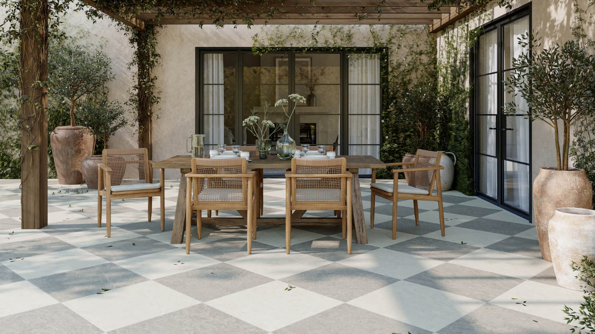
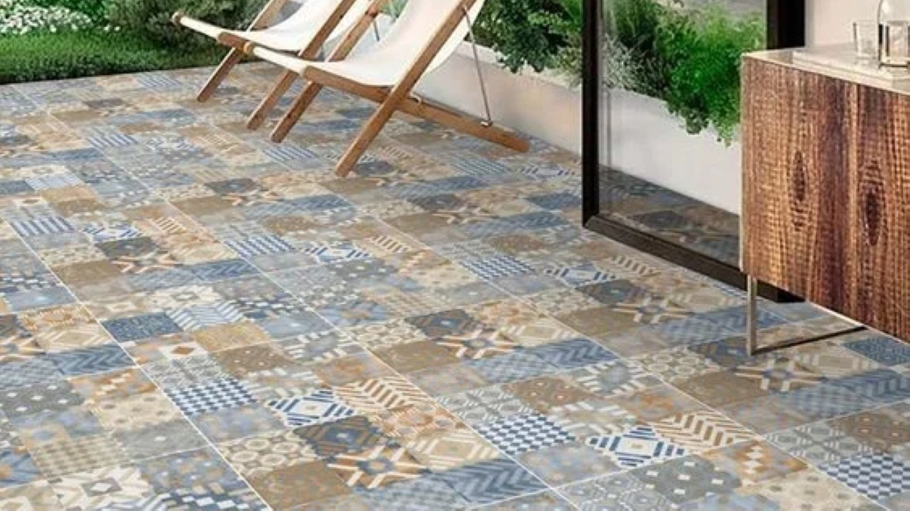
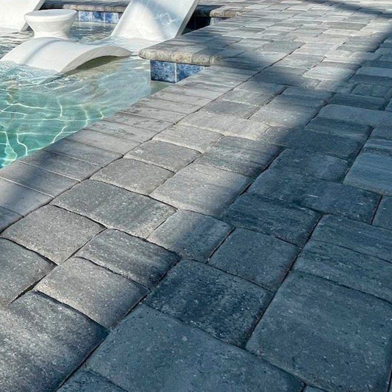
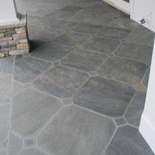
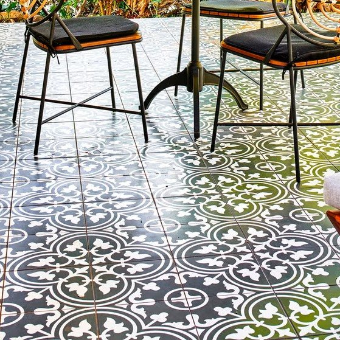
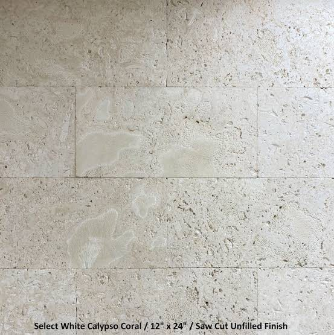

Patio & Outdoor Tile Installation in Hattiesburg, MS
South Mississippi's heat, humidity, and heavy summer rain call for outdoor tile that's built for it. We use slip-resistant, weather-stable materials on patios, porches, and pool decks.
Outdoor Tile Built for Mississippi Weather
Outdoor tile has to handle direct sun, standing water after a downpour, and bare feet walking around a pool — which means slip resistance and proper drainage slope matter as much as the look of the material. We use tile rated for exterior use with the correct slip-resistance rating for wet areas, and we grade the substrate so water sheds away from the house instead of pooling.
Whether you're tiling a covered porch, an open patio, or the deck around a pool, proper substrate prep and expansion joints are what keep outdoor tile from cracking or heaving after a few Mississippi summers of heat and heavy rain.
What We Install
- Slip-resistant porcelain and stone-look outdoor tile
- Pool deck tile with proper coping and drainage
- Covered porch and open patio flooring
- Substrate grading and drainage planning
- Expansion joints sized for outdoor temperature swings
- Removal of old pavers, concrete coatings, or outdoor flooring

Outdoor Tile Material Options

Porcelain Pavers
Thick, dense pavers rated for exterior use with strong slip resistance and low water absorption.

Travertine
A cooler-underfoot natural stone popular around pool decks, with a naturally textured, slip-resistant surface.

Textured Outdoor Tile
Porcelain tile with a textured, high-traction finish designed specifically for wet outdoor surfaces.

Natural Stone Coping
Rounded-edge coping stone that finishes pool edges cleanly and safely.
Patio & Outdoor Tile FAQ
Is outdoor tile different from tile used indoors?
Yes. Outdoor tile needs a higher slip-resistance rating (usually measured by its coefficient of friction) and lower water absorption than most indoor tile, since it's exposed to rain, pool splash, and bare feet.
Can outdoor tile crack in cold weather?
South Mississippi rarely sees hard freezes, but proper expansion joints and a well-drained substrate still matter — poor drainage combined with even a light freeze can cause cracking over time.
Do you install tile around existing pools?
Yes, pool deck and coping tile installation around an existing pool is a common project for Hattiesburg-area homeowners updating an older deck.
Other Tile Services
Ready to Update Your Patio or Pool Deck?
Get a fast, free quote from the crew doing the work.
Patio & Outdoor Tile Installation in Hattiesburg & the Pine Belt
We install patio and outdoor tile throughout Hattiesburg, Mississippi and the surrounding Pine Belt. If you're searching for a patio tile installer near you, a porcelain paver contractor in Hattiesburg, or someone to tile a porch or outdoor living area, we do the work ourselves — no subcontracted crews. Outdoor tile has to stand up to Mississippi sun, rain, and humidity, so we choose slip-resistant materials and set them for the long haul.
Homeowners come to us for patio tile, porcelain paver installation, travertine pavers, textured slip-resistant outdoor tile, porch and sunroom floors, and outdoor kitchen tile. If you've searched "patio tile installers near me," "porcelain pavers Hattiesburg," or "outdoor tile Pine Belt," we can help.
Outdoor Tile We Install
- Patio tile and outdoor living-space floors
- Porcelain pavers and travertine pavers
- Slip-resistant, textured outdoor porcelain tile
- Natural stone coping and accents
- Porch, sunroom, and outdoor kitchen tile
Serving Hattiesburg and Nearby Towns
We install patio and outdoor tile in Hattiesburg, Petal, Purvis, Sumrall, Laurel, Ellisville, Columbia, and Wiggins, plus the surrounding Forrest, Lamar, Jones, Marion, and Stone County areas of the Pine Belt. Call (769) 204-2565 or send over your project for a free quote on your patio tile installation.
More About Patio & Outdoor Tile Installation in Hattiesburg, MS
Outdoor tile takes more abuse than anything inside the house — direct Mississippi sun, heavy summer rain, and constant temperature swings — so material choice and installation method matter even more than they do indoors. Homeowners searching "patio tile installer near me," "porcelain paver contractor Hattiesburg MS," "pool deck tile near me," or "outdoor porch tile Pine Belt" are usually looking for a surface that won't get slick when it's wet or crack the first cold snap. We install exterior-rated tile and pavers built for exactly that.
We handle covered porches, sunrooms, screened areas, open patios, and pool surrounds. Porcelain pavers give you the look of stone or wood with almost no maintenance, travertine brings a natural, cooler-underfoot surface that suits Mississippi summers, and textured, slip-resistant porcelain is the safe pick for any wet area. On open-air installs we pay attention to slope and drainage so water sheds away from the house instead of pooling against the foundation.
Outdoor Surfaces We Tile
- Covered porches and front entries
- Screened porches and sunrooms
- Open patios and outdoor living areas
- Pool decks and pool surrounds
- Porcelain pavers and travertine pavers
- Outdoor kitchen and grill-area tile
Frequently Asked Questions About Outdoor Tile
Will outdoor tile get slippery when wet? Not if the right tile is used — we install textured, slip-resistant, exterior-rated tile and pavers made for wet areas like patios and pool decks.
Can outdoor tile handle Mississippi weather? Yes, when it's rated for exterior use and set with the correct methods for drainage and movement, which is exactly how we install it.
Do you offer free quotes? Yes, every outdoor tile quote is free. Call (769) 204-2565 or send over your project. We install patio and outdoor tile across Hattiesburg, Petal, Purvis, Sumrall, Laurel, Ellisville, Columbia, and Wiggins.